Massimo Bordogna / Master Thesis Project · 2024-2026 · Interaction Design ZHdK · Department of Design
Mentors / Prof. Dr. Karmen Franinović, Luke Franzke and Anthea Oestreicher
Teaching Assistant / Duy Bui
External collaborators / Marta Reyes and Stefanie Eyring · Eawag · Aquascope
During the final fieldwork session on Lake Greifensee, Eawag scientists Marta Reyes and Stefanie Eyring were given a disposable analog camera to use as a cultural probe — a way to involve them more directly in the design process and surface their own perspective. The instruction was simple: capture whatever moments, objects, or places felt meaningful in communicating their work and the subject of their research to a wider public. The resulting photographs, taken between the lake’s monitoring station and the Eawag laboratory, offer a personal, unscripted glimpse into the everyday practice of studying plankton.
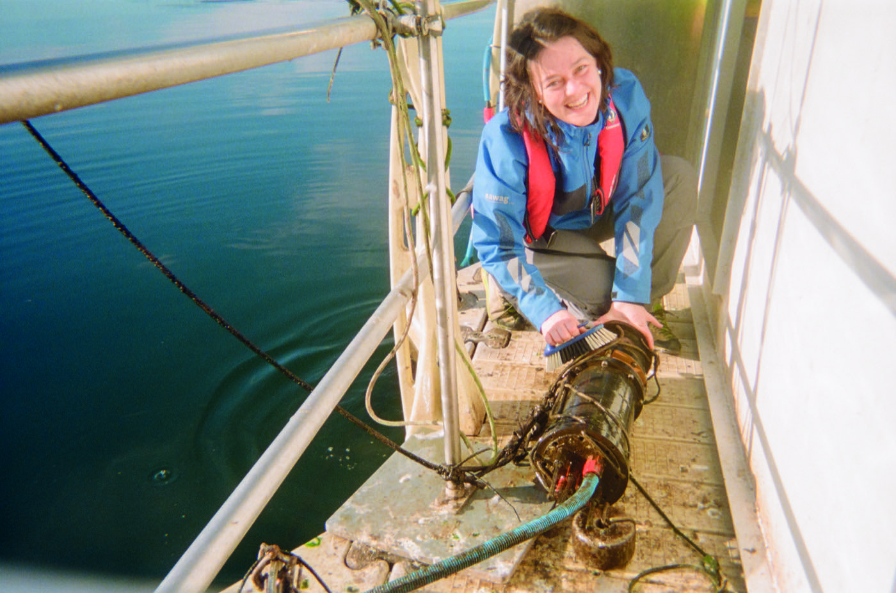
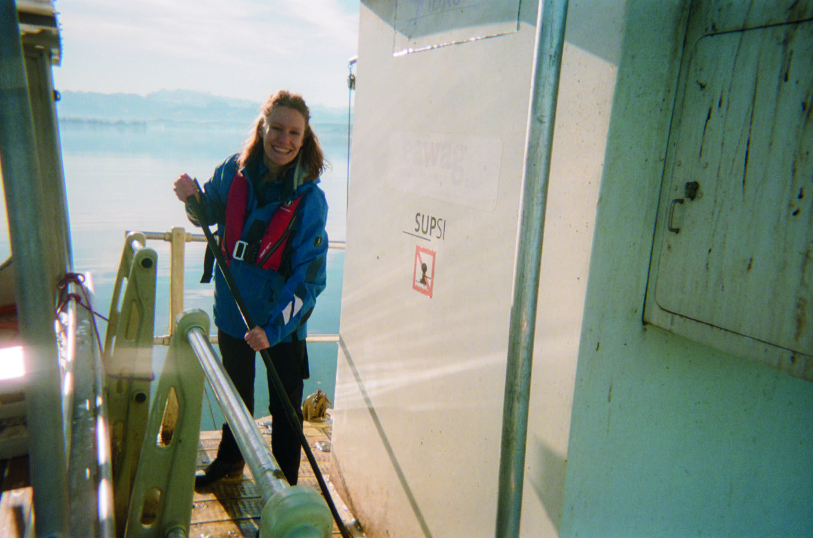
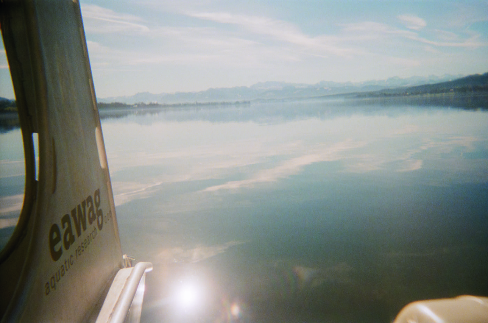
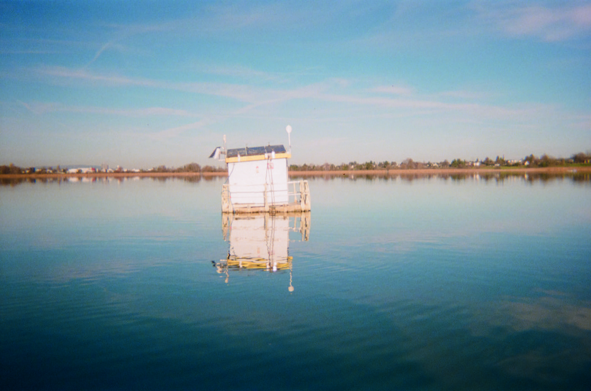
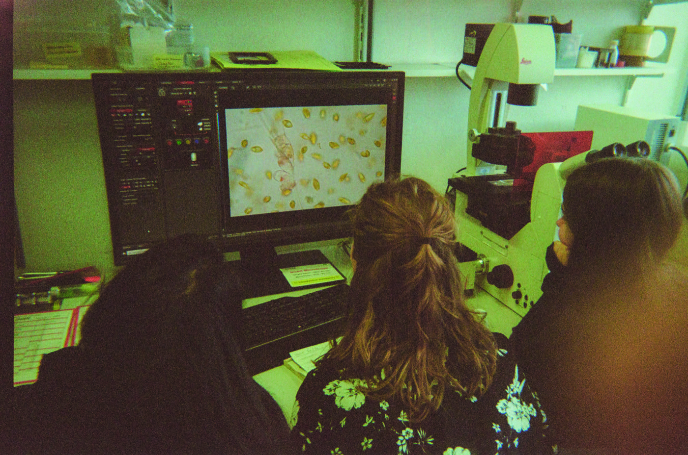
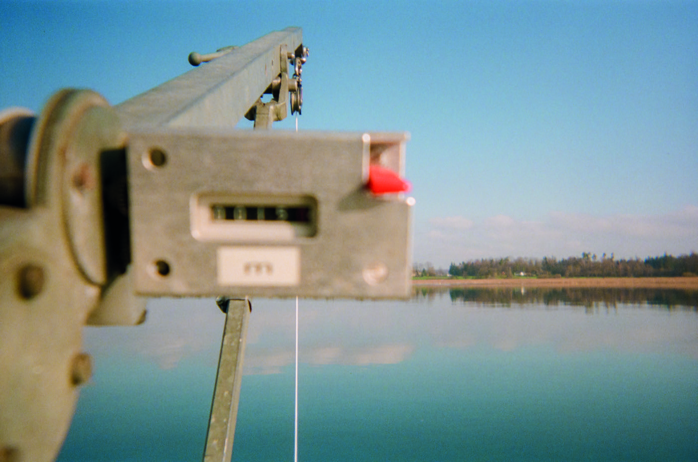
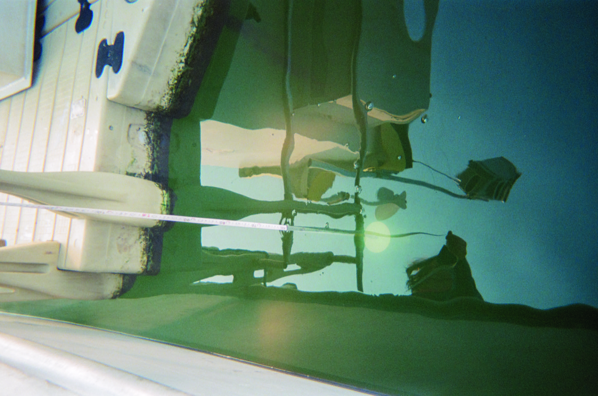
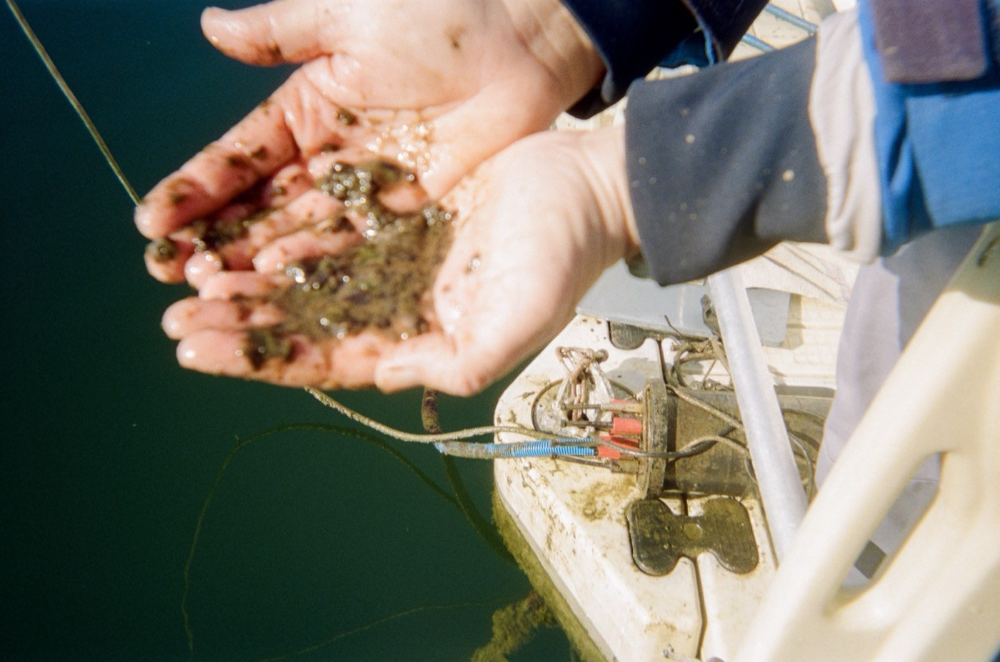
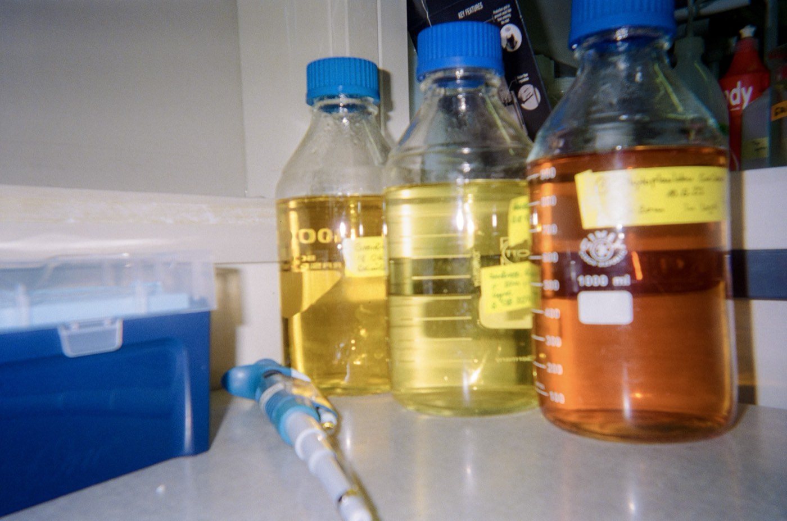
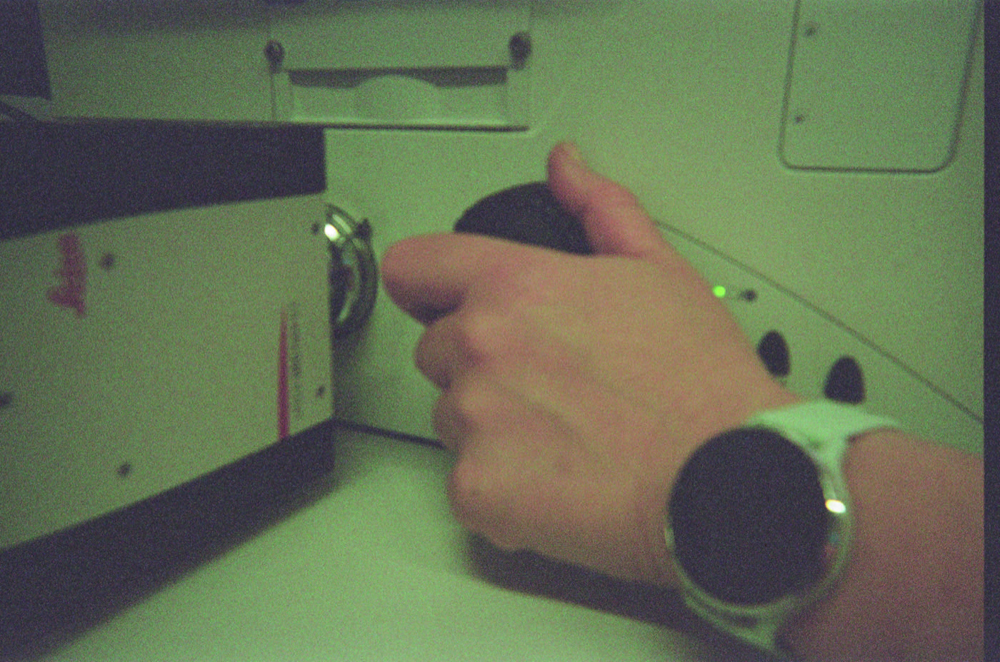
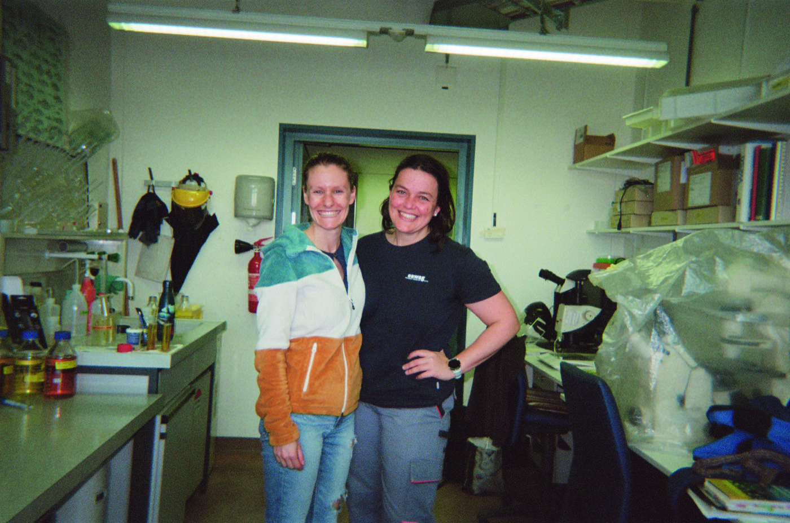